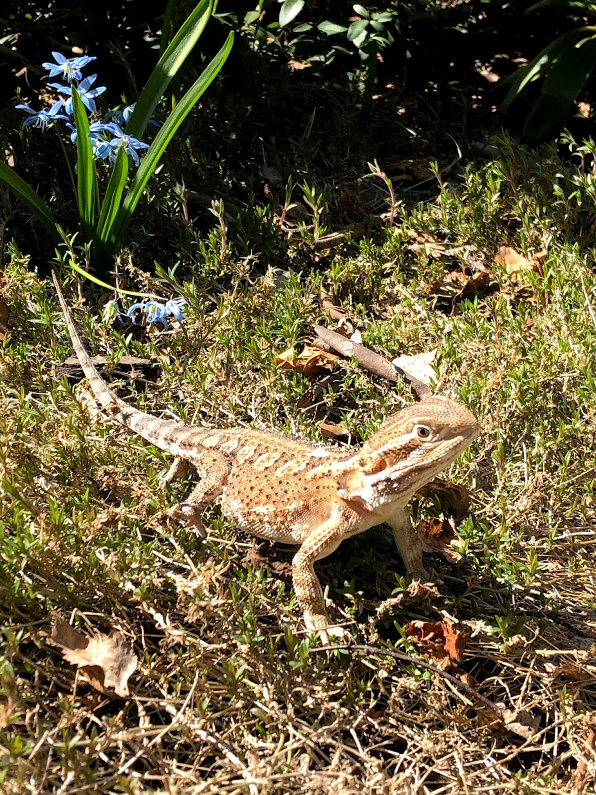

I have three pets. Two chickens and one lizard. The chickes's names are Tustus and Karo and the lizard is called Rhea. 
Rhea is the oldest of the three. She is one and a half years old and will live for 5-7 years more. Rhea is a Rankins dragon. She is not very smart but can do a few tricks like turning around or jumping. Rhea's favourite food is coccoons or beatles. She would eat them always but I remember to also give her fruits and veggies, although sometimes she doesnt eat them.
Rhea is very chill and calm usually. she doesnt get scared easily, but when she does she starts backing out or hissing and opening her mouth. She likes to crawl around and is very curious. I sometimes keep her on my shoulder while cooking or doing something else. She would sit there for hours. More about Rankins dragons HERE.